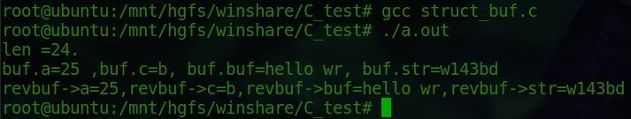

结构体的成员变量在内存中存储的方式，决定于设定的内存对齐方式是几字节：gcc编译默认使用4字节对齐：
1 #include <stdio.h>
2
3 typedef struct test_buf
4 {
5 int a;
6 char c;
7 char buf[8];
8 char *str;
9
10 }buf_t;
11
12 void test_send_srtbuf(void *arg)
13 {
14 //buf_t *revbuf = (buf_t *)arg;
15 buf_t *revbuf = arg;
16 printf("revbuf->a=%d,revbuf->c=%c,revbuf->buf=%s,revbuf->str=%s\n",revbuf->a,revbuf->c,revbuf->buf,revbuf->str);
17 //char *testbuf = arg;
18 //printf("testbuf=%s,testbuf大小为：%d\n",testbuf,sizeof(testbuf));
19 return;
20 }
21 int main(void)
22 {
23 int len = 0;
24 char revbuf[30] = {0};
25 buf_t buf={
26 .a = 25,
27 .c = 'b',
28 .buf="hello wr",
29 .str = "w143bd",
30 };
31 len = sizeof(buf);
32 printf("len =%d.\n",len);
33 printf("buf.a=%d ,buf.c=%c, buf.buf=%s, buf.str=%s\n",buf.a,buf.c,buf.buf,buf.str);
34 test_send_srtbuf(&buf);
35 return 0;
36 }
上面程序的运行结果：

调用test_send_strbuf时，参数被解析为了void类型，解析时为了防止数据错乱，将它强制类型转换为结构体类型，赋值给了另一个变量，就可以访问成员的值。